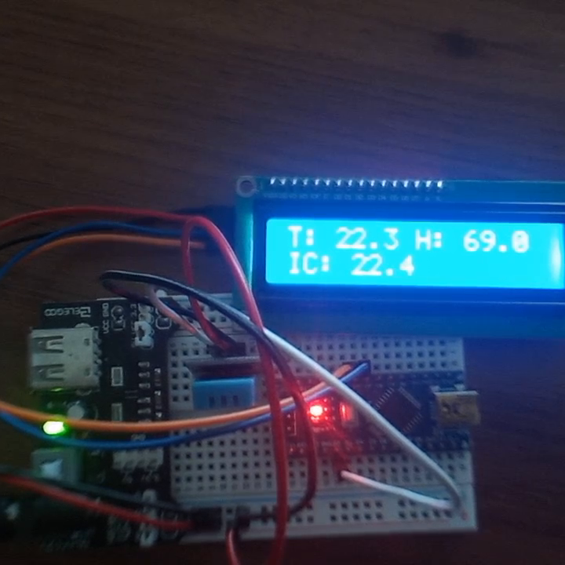

Monitor ambiental con DHT11 Y LCD
El proyecto que presentamos consiste en la implementación de un sistema de monitorización ambiental utilizando un sensor DHT11 y una pantalla LCD 16x2. El sensor DHT11 es capaz de medir la temperatura y la humedad del ambiente en el cual está instalado, mientras que la pantalla LCD 16x2 se utiliza para visualizar los datos obtenidos por el sensor.

Ver en Github
